01はじめに
旅行は、贅沢でしょうか。
多くの人が、こう思っています。
「旅行は、お金に余裕がある人のもの」
「時間ができたら、いつか行くもの」
「今の自分には、まだ早い」
かつての私も、そう思っていました。
きっと、あなたも。
でも、もし。
その「いつか」が、一生来なかったとしたら。
少しだけ、想像してみてください。
あなたが最後に、心の底から「来てよかった」と、思える場所に立ったのは、いつでしょう。
最後に、家族みんなで、おなかを抱えて笑ったのは、いつでしたか。
思い出すのに、少し時間がかかったなら。
この本は、きっと、あなたのための本です。
私たちは毎日、がんばって働いています。
家族のために。
将来のために。
朝は満員電車に揺られ、夜はくたくたで帰ってくる。
「今週も、よくがんばった」
そう自分に言い聞かせて、また、次の一週間が始まる。
その繰り返しの中で、私たちは、大事なことを、つい、後回しにしてしまいます。
「将来のために」と言いながら、その「将来」を、私たちは、ちゃんと生きているでしょうか。
この本は、マイルの貯め方を教える本ではありません。
貯め方のテクニックや、細かいルールを、覚えてもらう本でもありません。
旅が、人生をどれだけ豊かにするか。
その理由を、ひとつの物語を通して、あなたにお届けする本です。
実は、旅行は、贅沢ではありません。
人生への投資です。
そして、健康への投資でもあります。
さらに言えば、特別な誰かではなく、ごく普通の会社員でも、その投資は、今日から始められます。
その入り口が、「マイル」という考え方です。
マイルは、目的ではありません。
人生を書き換えるための、道具です。
この本には、ある夫婦が登場します。
夫のケンジさん、48歳。
毎日まじめに働く、現実派の会社員です。
妻のユミさん、46歳。
家族との思い出を、何より大切にする人です。
かつてのあなたと同じように、旅をあきらめていた、どこにでもいる、ふつうの夫婦です。
その2人が、ひとりの友人と、ひとりの案内人に出会い、
少しずつ、人生の見え方を、変えていきます。
読み終えたとき、あなたはきっと、こう思っているはずです。
「旅に出たい」
「人生を、もっと楽しみたい」
「家族との思い出を、もっと増やしたい」
その気持ちこそが、あなたの人生を変える、最初の一歩です。
さあ、物語を、はじめましょう。
02第1章 旅が人生を変える理由
その夜、ユミは玄関のドアを開けるなり、まだカフェの余韻の中にいた。
久しぶりに会った友人のマキが、日に焼けて、とても楽しそうだったこと。
去年、バリ島とフランスに行ったと、さらりと言ってのけたこと。
そして最後に、まっすぐな目で、こう言ったこと。
「今はね――旅は、人生でいちばんの“投資”だと思ってる」
投資。
そんな言葉を、旅行に使う人に、ユミは、初めて会った。
「ただいま」
リビングでは、ケンジが、いつものように、ソファでぐったりしていた。
テレビには、ハワイの青い海が映っている。
でも、ケンジの目は、その海を見ているようで、見ていなかった。
「おかえり。マキさん、元気だった?」
「うん……元気っていうか」
ユミは、その日のことを、そのまま夫に話した。
バリ島。
フランス。
調理師をしながら、家族との時間も大切にして。
それなのに、ちゃんと、旅をしている。
聞き終わったケンジは、少し笑って、テレビの海に目をやった。
「いいなあ。うちとは、住む世界が違うんだよ、きっと」
いつもの言葉だった。
「うちには無理」
「余裕のある人がやること」
その言葉で、いつも、会話は終わっていた。
海の映像が、ふっと切り替わる。
その青が消えるのを、ケンジは、少しだけ、名残おしそうに見ていた。
「いつか」は、待っていても来ない
考えてみれば、と、ユミは思う。
私たちが最後に旅行らしい旅行をしたのは、もう、5年も前。
子どもが、まだ小さかったころだ。
あのとき撮った写真の中で、家族はみんな、少しずつ、幼い。
新婚のころは、二人でよく話していた。
「いつか、海外に行こうね」
「定年したら、のんびり旅しようか」
夜、安いワインを開けながら、まだ見ぬ景色の話をした。
あのころは、その「いつか」が、すぐそこにあるような気がしていた。
でも。
その「いつか」を、私たちはずっと、先延ばしにしてきた。
仕事が忙しいから。
子どもの学費がかかるから。
もう少し、落ち着いてから。
理由は、いくらでもあった。
そして、ユミの胸に、小さな不安がよぎる。
その「いつか」は、本当に、来るのだろうか。
あなたにも、ありませんか。
「落ち着いたら」
「余裕ができたら」
そう言って、後回しにしてきた願いが。
その「落ち着いたら」は、いったい、いつ来るのでしょう。
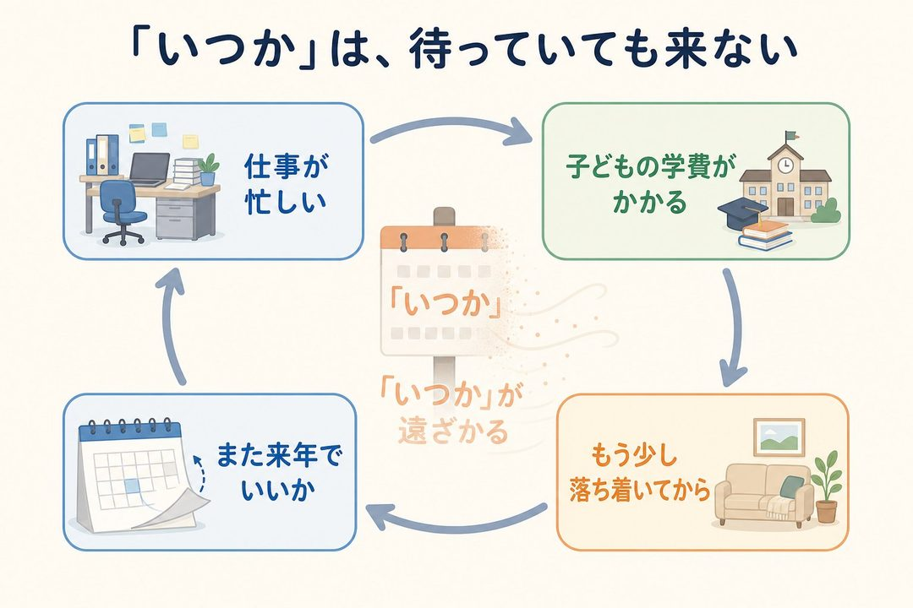
「いつか」は、待っていても来ない
旅は「浪費」ではなく「投資」
ここで、少しだけ、立ち止まって考えてみたいことがあります。
私たちはお金を使うとき、なんとなく、二つに分けて考えています。
ひとつは、浪費。
使ったら、消えてなくなるお金。
もうひとつは、投資。
使うことで、あとから何かが返ってくるお金。
多くの人は、旅行を「浪費」の側に入れています。
楽しいけれど、お金が減るだけ。
だから、余裕があるときだけの、ぜいたく品。
でも、本当に、そうでしょうか。
旅から帰ってきたあと、あなたに残るものを、思い出してみてください。
海の色。
知らない街の、においや、音。
一緒に笑った、家族の顔。
それは、財布からは消えても、心からは、消えません。
むしろ、何年たっても、ふとした瞬間に、あなたを励ましてくれる。
仕事で、くじけそうになった夜に。
理由もなく、気持ちが沈んだ朝に。
「あの旅は、楽しかったな」
その記憶が、そっと背中を押してくれる。
それは、消えてなくなる「浪費」でしょうか。
それとも、一生ものの「投資」でしょうか。
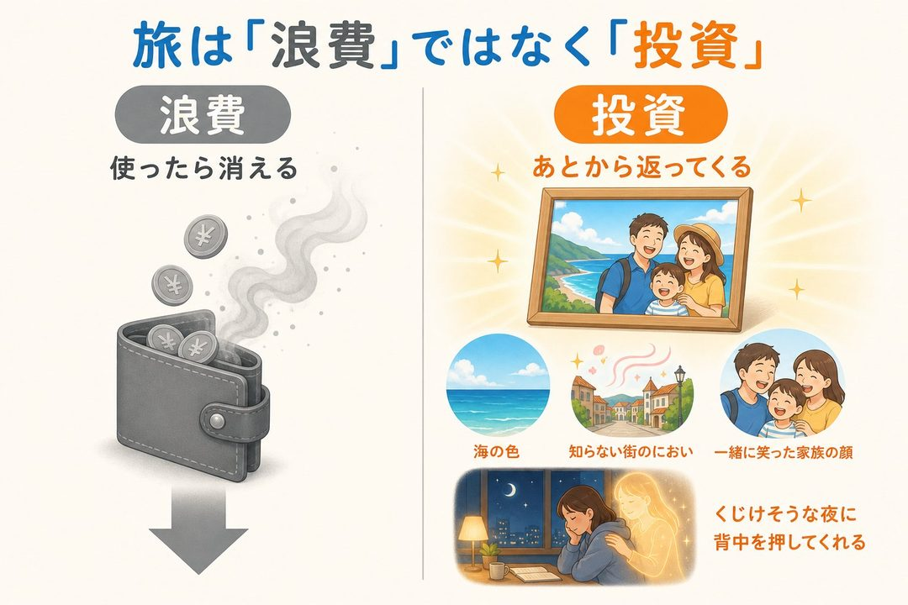
旅は「浪費」ではなく「投資」
幸せは「モノ」より「体験」に宿る
心理学の世界では、こんな話が、よく語られます。
人は、高価なモノを買っても、その幸せに、わりとすぐ、慣れてしまう。
新しい服も、新しい車も、手に入れた瞬間が、いちばんうれしくて、数か月もすれば、当たり前になっていく。
あなたも、覚えがありませんか。
あんなに欲しかったものが、気づけば、ただの「持ち物」になっていた、あの感じ。
ところが、「体験」に使ったお金は、時間がたつほど、価値が増していく、と言われます。
旅の思い出は、色あせるどころか、語るたびに、ふくらんでいきます。
「あのとき、あの店に入ってさ」
「あの景色、すごかったよね」
家族で、何度でも、その話ができる。
食卓で、それが話題になるたびに、みんなの顔が、ほころぶ。
モノは古くなるけれど、思い出は、古くなりません。
これは、旅が「投資」である、ひとつの理由です。
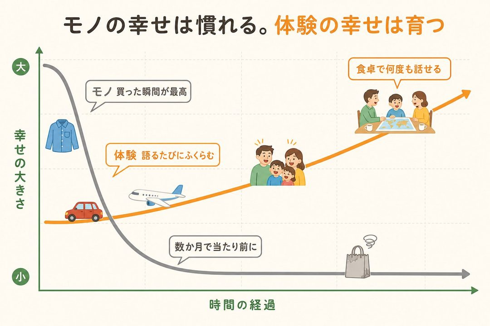
モノの幸せは慣れる。体験の幸せは育つ
旅は、心と体の栄養になる
それだけでは、ありません。
旅は、心と体にも、静かに効いていきます。
いつもの通勤路。
いつものデスク。
いつもの夕食。
同じ毎日は、ラクである一方で、知らないうちに、心をすり減らしていきます。
そこへ、旅は、まったく違う景色を、差し出してくれます。
見たことのない空。
歩いたことのない道。
聞いたことのない、言葉のざわめき。
その新しさが、こわばった心を、ゆるめてくれる。
旅先で、思いきり深呼吸したときの、あの解放感を、思い出してください。
肩の力が、すっと抜けて。
「あぁ、来てよかった」と、自然に、声がもれる。
その一言が出た瞬間、私たちの心と体は、たしかに、回復しているのです。
よく笑い、よく感動する人ほど、元気で、長生きする――。
そんな話を、あなたも、どこかで、聞いたことがあるかもしれません。
旅は、その「よく笑い、よく感動する時間」を、一気に、運んできてくれるのです。
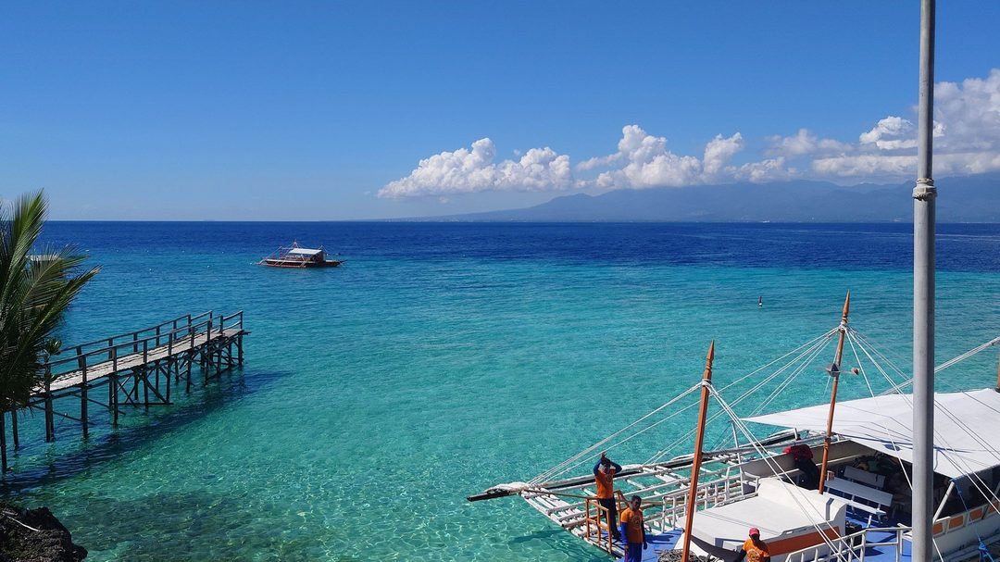
こんな景色の中に、自分が立っているところを、少しだけ、想像してみてください。
それだけで、胸のあたりが、ふっと軽くなりませんか。
いちばん大切なのは、「一緒に過ごした時間」
そして、もうひとつ。
旅がくれる、いちばん大きな贈り物。
それは、家族と過ごす、濃い時間です。
同じ家に住んでいても、私たちは、案外、すれ違っています。
朝は、バタバタ。
夜は、疲れて、それぞれスマホ。
会話らしい会話は、気づけば、ずいぶん、減っている。
「今日、どうだった?」
「べつに、ふつう」
そんなやりとりで、一日が、終わっていく。
でも、旅先は、違います。
同じ景色を見て、同じものを食べて、同じ時間を、まるごと、共有する。
普段は無口な子どもが、旅先では、なぜか、よくしゃべる。
いつもは仕事の話ばかりの夫が、海を見ながら、ぽつりと本音をこぼす。
そういう「いつもと違う顔」に、旅先で、出会えるのです。
子どもが大きくなれば、やがて、親と旅行になんて、行ってくれなくなる日が、来ます。
「一緒に行ける時間」には、実は、期限が、あるのです。
その期限は、思っているより、ずっと早く、来ます。
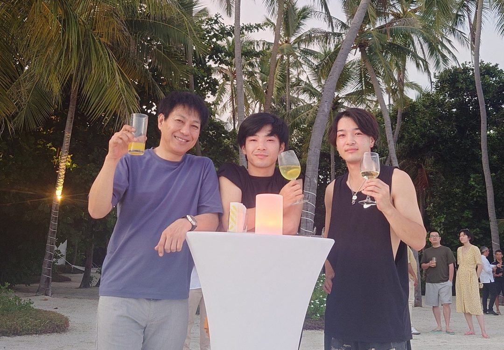
この写真の中の笑顔を、あなたの家族のものに、できたなら。
きっと、それは、どんな高価なものより、価値のある一枚に、なるはずです。
あなたの人生に、旅はあと何回?
少し、こわい話を、します。
でも、大事な話です。
もし、あなたが40代、50代だとして。
家族そろって、元気に、心から旅を楽しめる時間は、あと、何回、残っているでしょうか。
年に一度、旅に出たとして。
10回?
20回?
数えてみると、その少なさに、驚くはずです。
しかも、その一回一回が、いつも「元気で、楽しめる」とは、限りません。
体が動くうちに。
家族がそろっているうちに。
みんなが、笑い合えるうちに。
旅は、お金があるときに行くもの、ではありません。
行ける時間があるうちに、行くものなのです。
そう考えると、「旅行は贅沢だ」という言葉が、少し、違って聞こえてきませんか。
むしろ、「行ける時間を、みすみす逃すこと」のほうが、ずっと、もったいないのかもしれません。
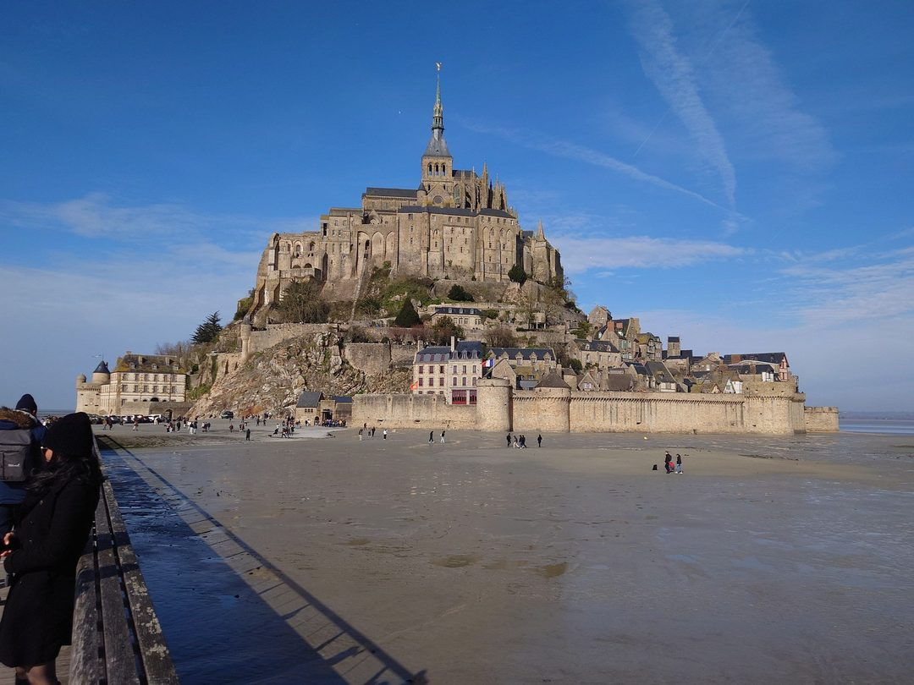
何百年も前の人が、心をこめて築いた、この場所。
写真で見るのと、その場に立つのとでは、胸に届くものが、まるで違います。
いつか、ではなく。
その「いつか」を、もう少しだけ、手前に引き寄せてみませんか。
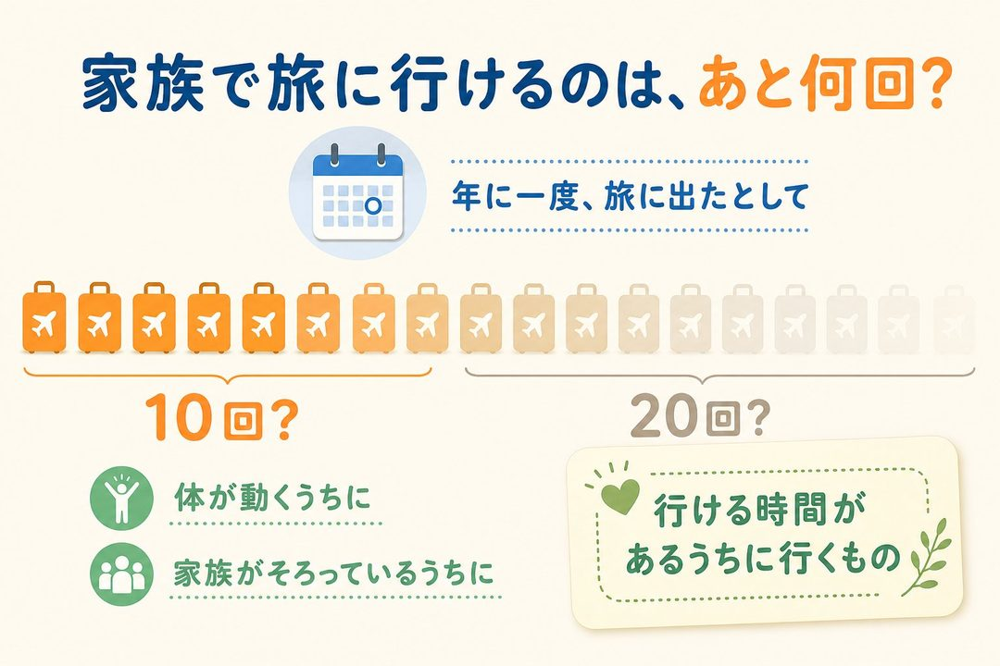
家族で旅に行けるのは、あと何回?
「あのマキが、そんなことを」
ユミの頭の中では、昼間のマキの言葉が、まだ、回っていた。
「私も昔は、あなたと同じだったんだよ」
旅なんて贅沢だと、ずっと、あきらめていた、と、マキは言った。
あのマキが。
同じだった人が、変わった。
なら――
私たちも、変われるのだろうか。
「ねえ」
ユミは、ケンジのほうを向いた。
「今度さ、マキに、もう少しちゃんと、話を聞いてみない?」
「話って?」
「どうやって、そんなに旅行に行けるのか。
出張が多いわけでも、お金持ちってわけでもないみたいなの」
ケンジは、少し考えて、それから、めずらしく、こう言った。
「……まあ、聞くだけなら」
その返事は、そっけなかった。
でも、ユミは、見逃さなかった。
夫の目が、消えたテレビの、海の残像を、まだ追っていたことを。
普通の会社員に、そんなことが、本当にできるのか。
半信半疑のまま、それでも、ほんの少しだけ、二人の心は、前を向きはじめていた。
その小さな一歩が、このあと、二人の人生を、大きく変えていくことに――
このときは、まだ、どちらも、気づいていなかった。
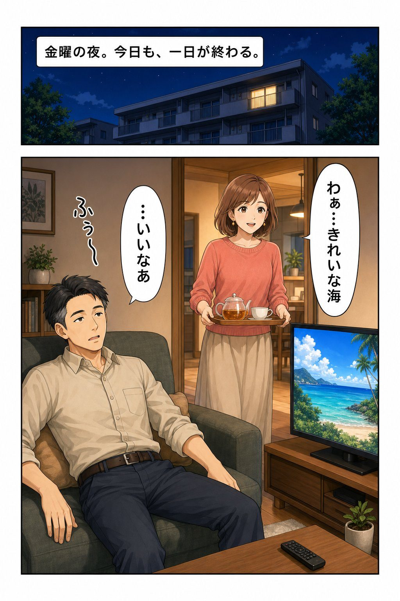
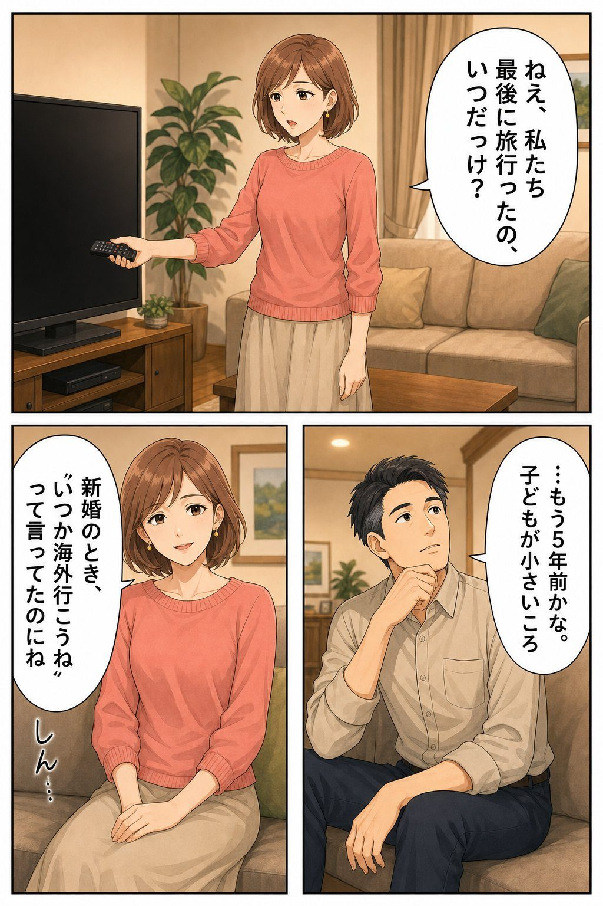
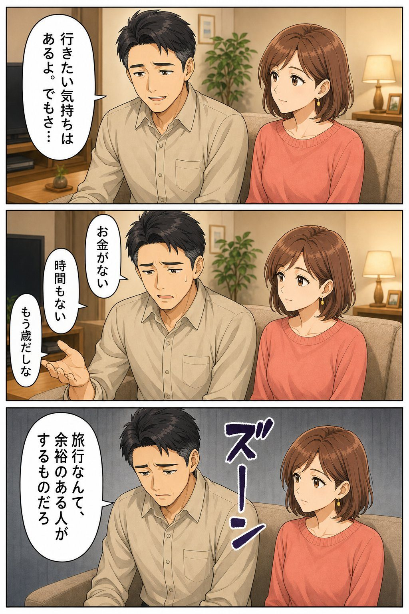
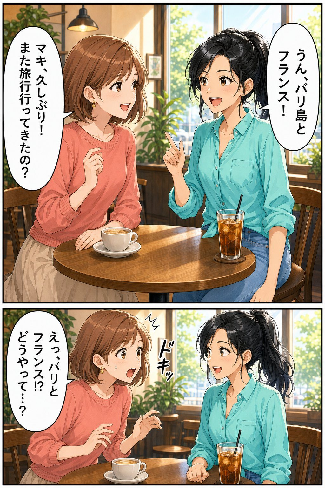
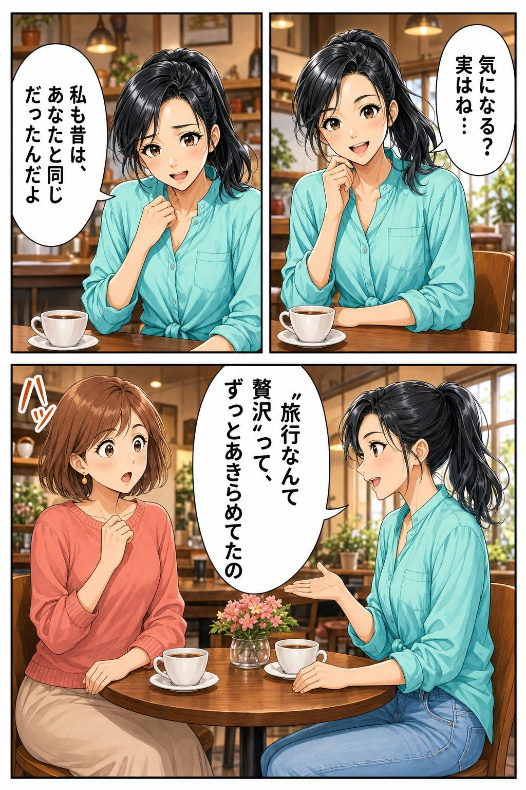
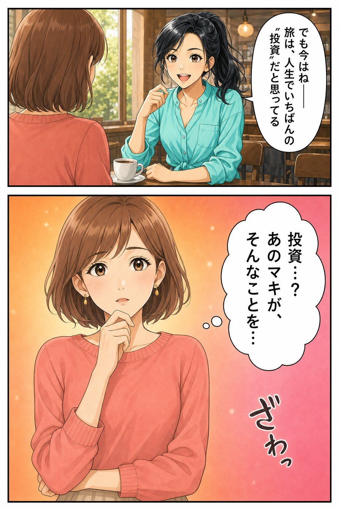
03第2章 普通の会社員でも人生は変わる
後日、三人は、また同じカフェのテーブルを、囲んでいた。
今日は、ケンジも一緒だ。
窓から差し込む、午後の光。
コーヒーの、やわらかい香り。
でも、ケンジの顔は、まだ、どこか、探るようだった。
「妻から、聞きました」
ケンジは、切り出した。
「去年、バリとフランスに行かれたって、本当ですか?」
「本当だよ」
マキは、あっさり、笑った。
「韓国も、台湾もね」
一年で、四か国。
ケンジは、思わず、失礼を承知で、いちばん気になっていたことを、聞いた。
「……あの、出張が、多いとか?」
「ううん。普通に、調理師の仕事してるよ」
「じゃあ、カードを、ものすごく使うとか?」
マキは、少し首をかしげて、それから、こともなげに言った。
「年間120万円くらいかな。普通の生活費だよ」
その瞬間。
ケンジとユミは、思わず、顔を見合わせた。
120万円。
月にすれば、10万円ほど。
食費や、光熱費や、日用品。
ごく普通の、暮らしのお金だ。
「うち……そのくらい、使ってるよね」
ユミが、小声で言った。
いや、それどころか。
「うちのほうが、多いかもしれない」
ケンジの頭の中で、毎月の支払いの数字が、ぐるぐると、回りはじめた。
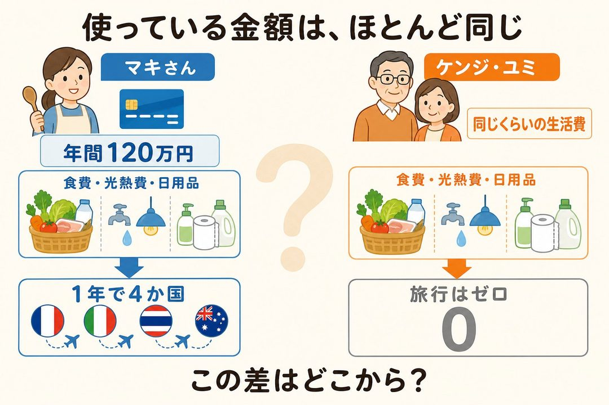
使っている金額は、ほとんど同じ
韓国の屋台、台湾の夜市
「去年はね」
マキは、うれしそうに、スマホを取り出した。
「まず、春に、韓国に行ったの」
画面には、にぎやかな屋台の写真。
「屋台のね、あの匂いがたまらないの。
甘辛いタレの、こうばしい湯気。
その場で焼いてくれるのを、はふはふ言いながら食べて」
マキの声を聞いているだけで、ユミの口の中に、じんわりと、つばがわいた。
「夏は、台湾」
夜市の、あたたかい光。
どこまでも続く、屋台の列。
「人がね、みんな親切なの。
言葉が通じなくても、笑って、道を教えてくれて。
なんだか、心がぽかぽかしたよ」
ケンジは、その話を聞きながら、気づけば、身を乗り出していた。
自分でも、意外だった。
旅の話なんて、うらやましいだけで、これまでは、聞くのもつらかったのに。
でも、マキの話には、「うらやましい」だけじゃない、何かが、あった。
バリ島の夕日、フランスの石畳
「秋はね、バリ島」
マキの声が、少し、やわらかくなった。
「夕方、ビーチに寝そべってね。
海に、太陽が、ゆっくり沈んでいくの」
空が、オレンジから、だんだん、紫に染まっていく。
「その色を、ただ、ぼーっと眺めるだけ。
何もしない、っていう贅沢を、生まれて初めて、味わった気がした」
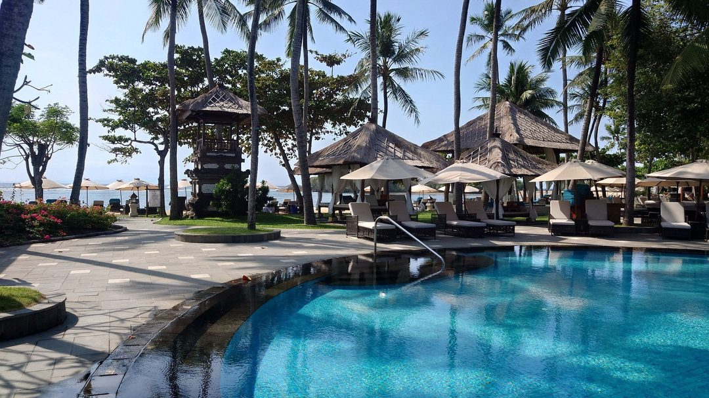
ユミは、その写真を見て、そっと、ため息をついた。
プールの向こうに、ヤシの木と、南国の空。
こんな場所で、何もせずに過ごす一日が、自分の人生にも、あるのだろうか。
「そして、冬は――」
マキは、いたずらっぽく、笑った。
「フランスと、イタリア」
石畳の、細い路地。
朝の、パン屋さんの香り。
「石畳をね、コツコツ歩いてるだけで、まるで、映画の中にいるみたいなの」
古い街並みの、レンガの色。
広場に響く、教会の鐘。
「夫と二人でね、ただ、あてもなく歩いて。
小さなカフェで、コーヒーを飲んで。
それだけで、一生の思い出になったよ」
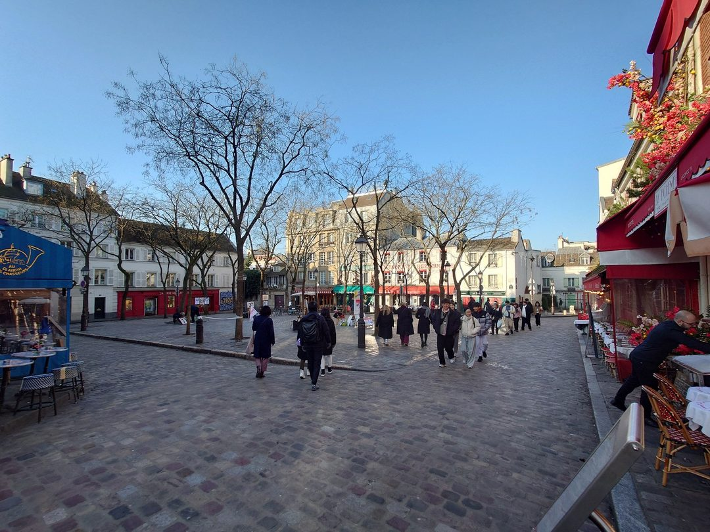
ユミの胸の奥で、ずっとしまい込んでいた憧れが、ふるえるように、目を覚ました。
こんな街を、夫と、歩いてみたい。
そう思った自分に、ユミ自身が、少し、驚いていた。
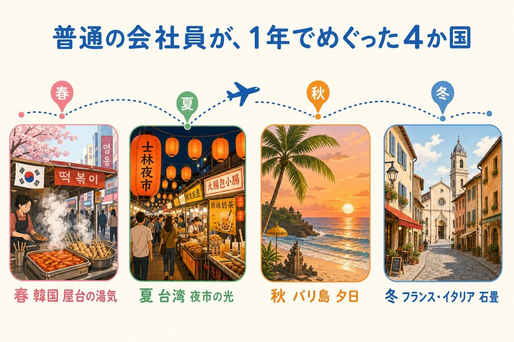
普通の会社員が、1年でめぐった4か国
違いは、「使った金額」ではなかった
ケンジは、まだ、混乱していた。
同じくらいの、生活費。
特別な、高収入でもない。
それなのに、マキは旅に行けて、自分たちは、行けない。
「どうして、そんなに、差がつくんですか?」
マキは、うれしそうに、うなずいた。
「いい質問。私も、最初はそこが、ぜんぜん、分からなかったの」
そして、こう続けた。
「違いはね、“いくら使ったか”じゃないの。
同じお金の使い方に、“ある工夫”を、足しただけ」
同じ、買い物。
同じ、支払い。
金額は、まったく、変えていない。
ただ、その使い方に、ほんの少しの「仕組み」を、加えた。
それだけで、一年後に、旅行が、ついてきた。
「私、何も、我慢してないんだよ」
マキは、言った。
「節約したわけでも、収入が増えたわけでもない。
ただ、“知っていたか、知らなかったか”。
それだけなの」
その言葉が、ケンジの胸に、ちくりと、刺さった。
知らなかった、だけ。
もし、本当に、それだけの差なら。
自分たちは、「知らない」というだけで、どれだけの旅を、これまで、あきらめてきたのだろう。
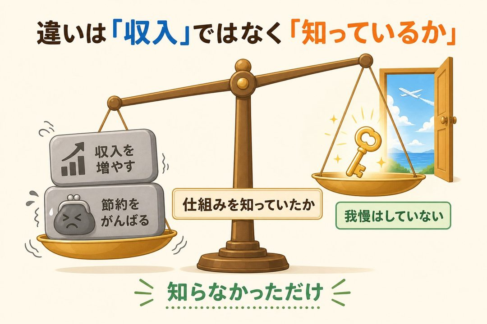
違いは「収入」ではなく「知っているか」
「私たちにも、できるのかな」
「うちには、無理だと思ってました」
ケンジが、ぽつりと、言った。
旅行は、余裕のある人のもの。
自分たちには、関係のない世界。
ずっと、そう思い込んでいた。
「私も、三年前まで、まったく同じだったよ」
マキは、やさしく、言った。
「毎日、仕事して、家事して。
旅行なんて、いつかの夢だと思ってた。
“うちには無理”って、口ぐせだったの」
その口ぐせが、なぜ、変わったのか。
「違いはね、たった一つ」
マキは、指を一本、立てた。
「“収入”じゃない。
“仕組みを知っているか”。
それだけなの」
仕組み。
その言葉が、ケンジとユミの胸に、静かに、引っかかった。
お金持ちだから、旅ができるのではない。
時間があるから、旅ができるのでもない。
ただ、その「仕組み」を、知っているか、知らないか。
ユミは、隣のケンジを、そっと見た。
「私たちにも……できるのかな」
そのつぶやきは、これまでの「いいなあ」とは、少し、色が違っていた。
これまでは、「うらやましい」で終わる、ため息だった。
でも、今の言葉には、かすかな、こんな気持ちが、混じっていた。
――もしかしたら、私たちにも。
あなたは、どうですか。
「自分には無理」と、決めつけてしまっていることは、ありませんか。
でも、それは本当に、「無理」なのでしょうか。
それとも、ただ、「知らない」だけ、なのでしょうか。
マキの、次の夢
「でね」
マキは、少し、いたずらっぽく、笑った。
「私、次の目標が、あるんだ」
「目標?」
「ハワイに、往復ファーストクラスで行くこと」
ファーストクラス。
その響きに、ケンジは、思わず、身構えた。
一番いい席。
一番、遠い世界。
そんなもの、宝くじでも当たらなければ、無理だと思っていた。
「それも、その“仕組み”で?」
「うん。ちゃんと、たどり着けるところに、あるんだよ」
マキの目は、本気だった。
夢を語っているのに、その足元は、しっかりと、地についている。
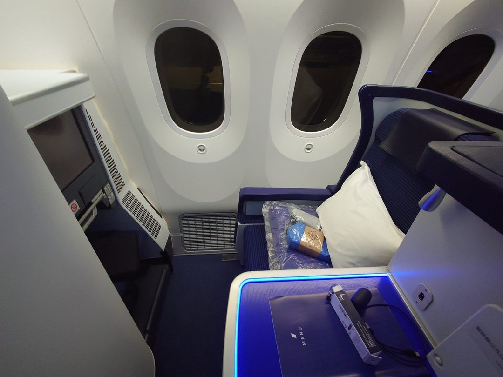
ゆったりとした座席。
機内で味わう、上質な時間。
飛行機に乗ること自体が、旅の、いちばんのごほうびになる。
そんな世界が、あるのだと。
そして、それが、手が届くところにあるのだと。
マキは、笑いながら、教えてくれた。
ユミの中で、何かが、静かに、動き出していた。
「その“仕組み”って」
ケンジが、身を乗り出した。
「いったい、何なんですか?」
その問いこそが、二人の人生が動き出す、本当の、はじまりだった。
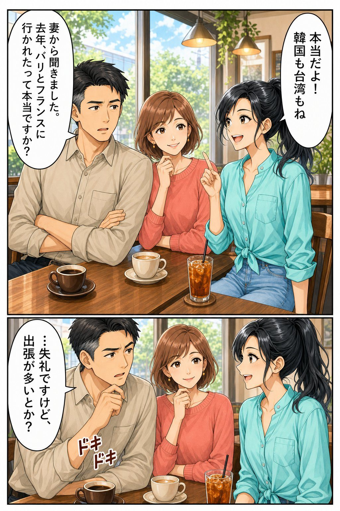
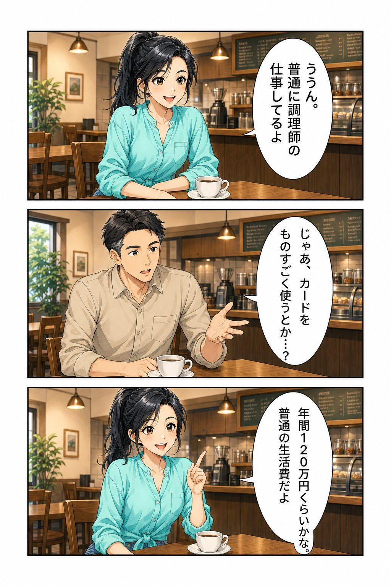
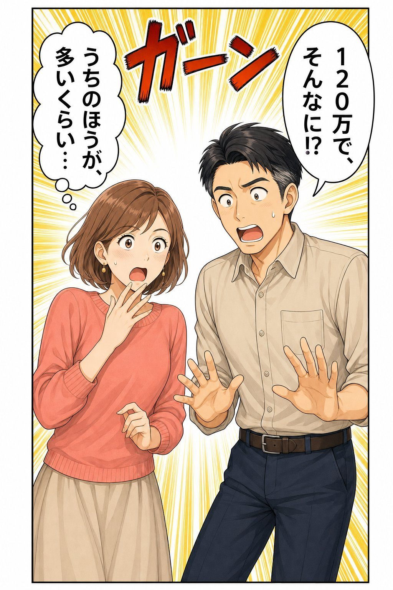
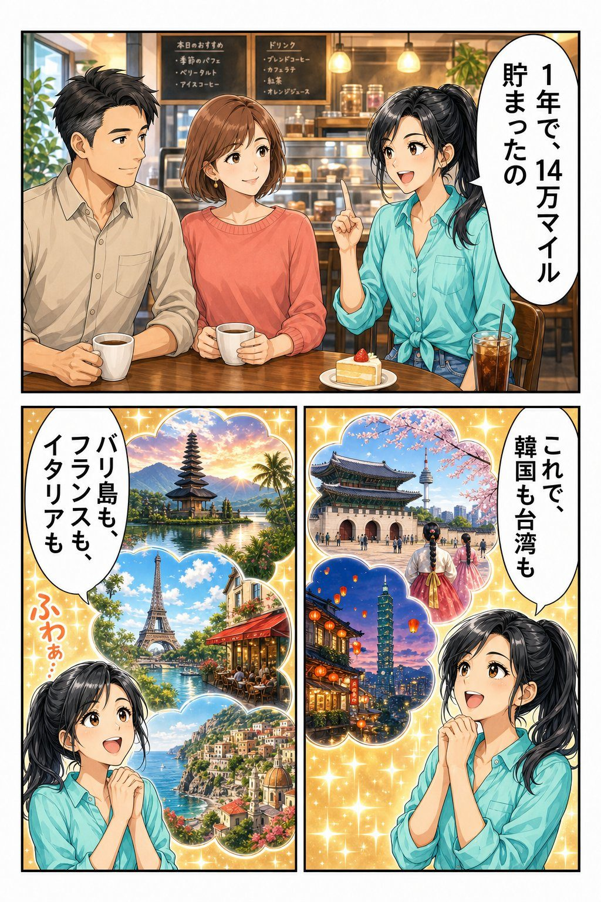
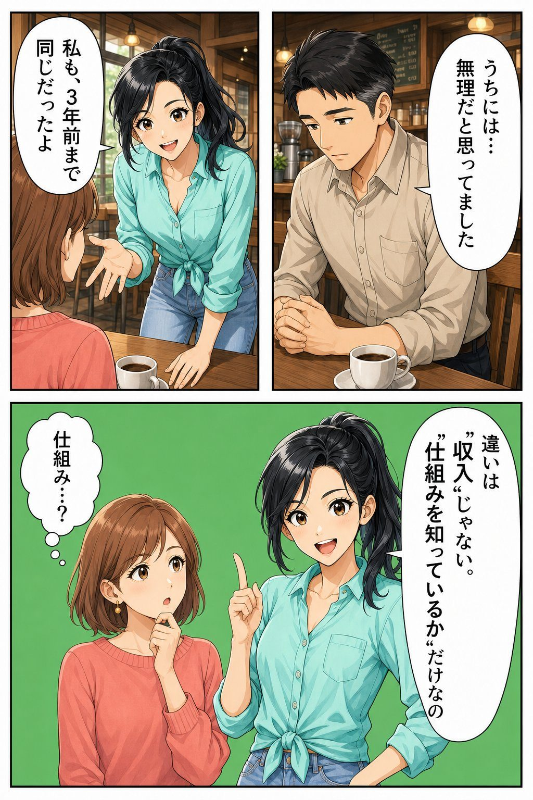
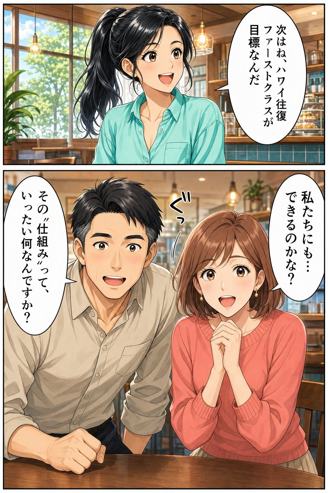
04第3章 マイルという考え方
「実はね」
マキは、少し照れたように、自分のカップを、見つめた。
「私も最初は、大きな勘違いを、してたの」
「勘違い?」
ケンジが、聞き返す。
マキは、うなずいて、昔の自分の話を、してくれた。
ちまちま貯めて、やめかけた日々
「最初はね、コンビニだったの」
支払いのたびに、ポイントカードを出す。
1円、2円と、こつこつ、貯める。
レジで、ポイントが増えるのを見るのは、ちょっとした、楽しみだった。
「なんだか、ゲームみたいでね。
“今日は3ポイント貯まった”とか、ちょっと、うれしかったの」
でも。
「半年たって、貯まったのが……たった数百円」
マキは、当時を思い出して、苦笑いした。
「これじゃあ、旅行なんて、いつになるか、分からない。
“こんなの、意味ないな”って。
正直、やめかけたんだ」
その気持ちは、ケンジにも、ユミにも、よく、分かった。
ポイントも、マイルも、なんとなく、そういうものだと思っていた。
ちまちま貯めて、たまに、ちょっと、得する。
その程度の、「おまけ」。
「私も、ずっと、そう思ってた」
マキは、言った。
「でもね――ある日、それが、ぜんぶ、ひっくり返ったの」
その一言に、ケンジも、ユミも、思わず、息を止めた。
同じ「1マイル」が、何十倍にもなる
「きっかけは、“使い方”だったの」
マキは、身を乗り出した。
「同じ1マイルでもね。
使い方しだいで、価値が、何十倍にも、変わるんだよ」
「何十倍!?」
ケンジが、思わず、声をあげた。
マキは、こんなふうに、説明してくれた。
貯めたマイルを、たとえば、日用品や、ちょっとした買い物に、換える。
それも、悪くはない。
でも、その使い方だと、価値は、ごくわずか。
ところが。
同じマイルを、「飛行機のチケット」に換えると、どうなるか。
しかも、遠い国への、いい席のチケットに。
そうすると、まったく同じマイルなのに、その価値が、けた違いに、はね上がる。
「同じ量を貯めても、どう使うかで、返ってくるものが、まるっきり、違うの」
ユミは、目を、丸くした。
「じゃあ……“貯め方”より、“使い方”?」
「そう。そこが、いちばんの、肝なの」
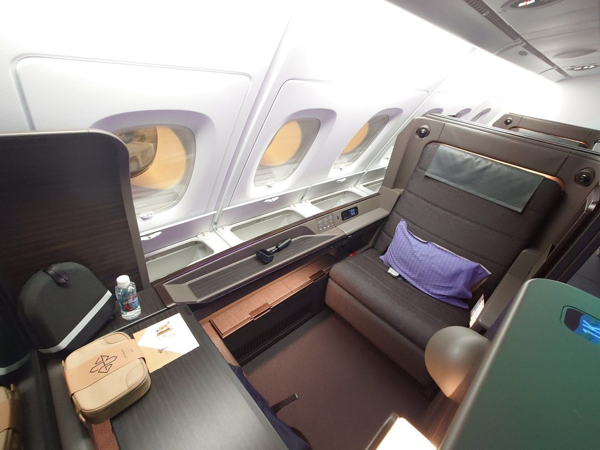
この、特別な空間へ。
「コンビニで数百円」と思っていたものが、使い方ひとつで、こんな世界の、扉を開ける。
その事実に、ユミは、ことばを失った。
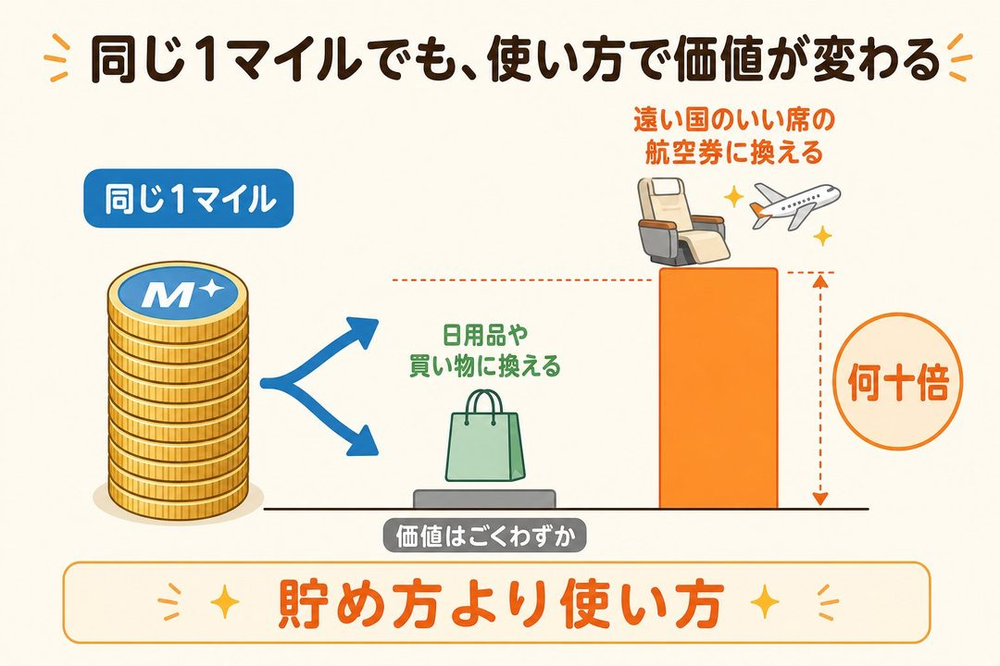
同じ1マイルでも、使い方で価値が変わる
貯めるのが目的じゃない。どう使うかが大事
「じゃあ、とにかく、たくさん貯めれば、いいの?」
ユミが、たずねた。
マキは、やさしく、首を、横に振った。
「もちろん、貯め方も、大事。
でもね、使い方も、同じくらい、大事なの」
そして、ゆっくりと、かみしめるように、言った。
「マイルを貯めるのが、“目的”じゃない。
貯めたマイルを、“どう使うか”が、大事なんだよ」
その言葉は、ケンジの中の、何かを、静かに、ひっくり返した。
これまで、ケンジがずっと気にしていたのは、別のことだった。
「どのカードが、一番トクなんだろう」
「どうやったら、一番たくさん、貯まるんだろう」
貯めることばかり、考えていた。
でも、マキの話は、まったく、逆だった。
どれだけ貯めても、使い方を間違えれば、その価値は、ほとんど、生まれない。
逆に、使い方さえ分かっていれば、同じ努力が、何十倍もの旅に、変わる。
「“どのカードが一番か”ばっかり、気にしてました……」
ケンジは、頭を、かいた。
「みんな、最初は、そうだよ」
マキは、笑った。
「私もね、貯めることに夢中で、“何のために貯めてるんだっけ?”って、分からなくなった時期もあったの」
でも、と、マキは続けた。
「“どんな旅がしたいか”が先にあって、そのために貯める。
そう気づいてから、ぜんぶが、楽しくなったんだ」
これは、実は、マイルだけの話では、ないのかもしれません。
私たちは、つい、「貯めること」に、一生懸命になります。
お金も。
時間も。
でも、大事なのは、それを「どう使うか」。
あなたが、これまで、一生懸命に貯めてきたものは。
いったい、何のために、使うためのものだったでしょう。
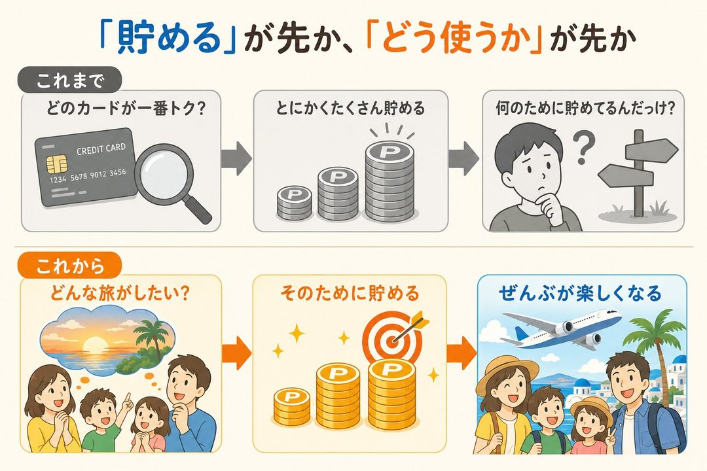
「貯める」が先か、「どう使うか」が先か
マイルは、人生を書き換える「道具」
「これね」
マキは、少し照れたように、打ち明けた。
「実は、私の言葉じゃ、ないんだ。
受け売り、なの」
「受け売り?」
「うん。私にこれを教えてくれた、“とも先生”っていう人が、いてね」
とも先生。
その名前が、初めて、二人の耳に、届いた。
「その人がね、いつも言うの」
マキは、大切そうに、その言葉を、口にした。
「“マイルは、貯めることが目的の、ポイントじゃない。
人生を書き換えるための、道具なんだ”って」
道具。
マイルは、集めて眺める、コレクションでも、ちょっとした、節約術でもない。
行きたかった場所へ、自分を運ぶための、道具。
あきらめていた景色を、現実に変えるための、道具。
そう考えた瞬間、マイルの姿が、まるで、違って見えてきた。
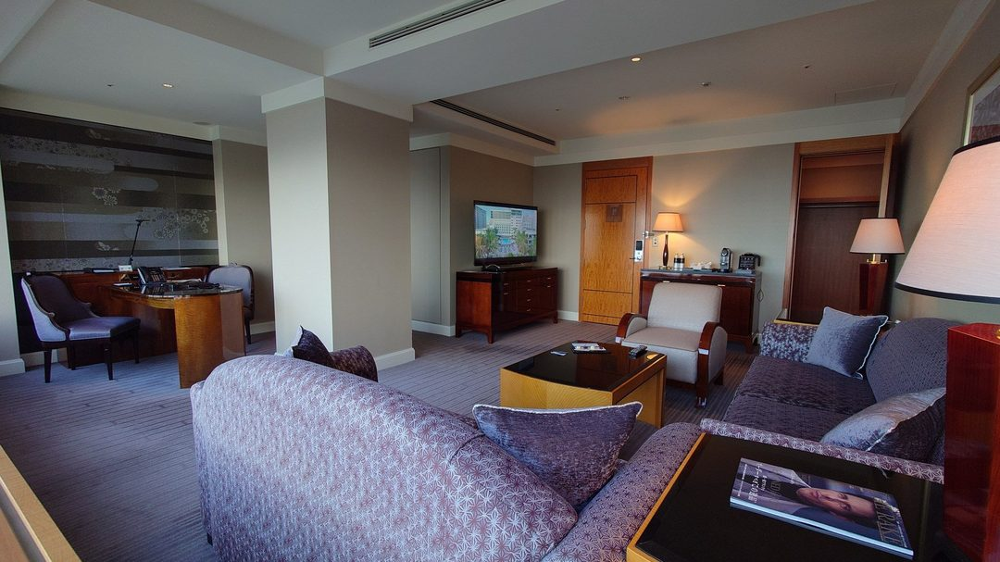
こんな部屋に泊まる自分なんて、想像したこともなかった。
でも、それが、「道具の使い方」ひとつで、現実になるのだとしたら。
ユミの胸は、知らないうちに、高鳴っていた。
「道具、か……」
ケンジは、つぶやいた。
道具なら、問題は「持っているかどうか」では、ない。
「どう使うか」だ。
どんなに立派な道具も、使い方を知らなければ、ただの、置物。
でも、使い方さえ分かれば、それは、人生を変える力に、なる。
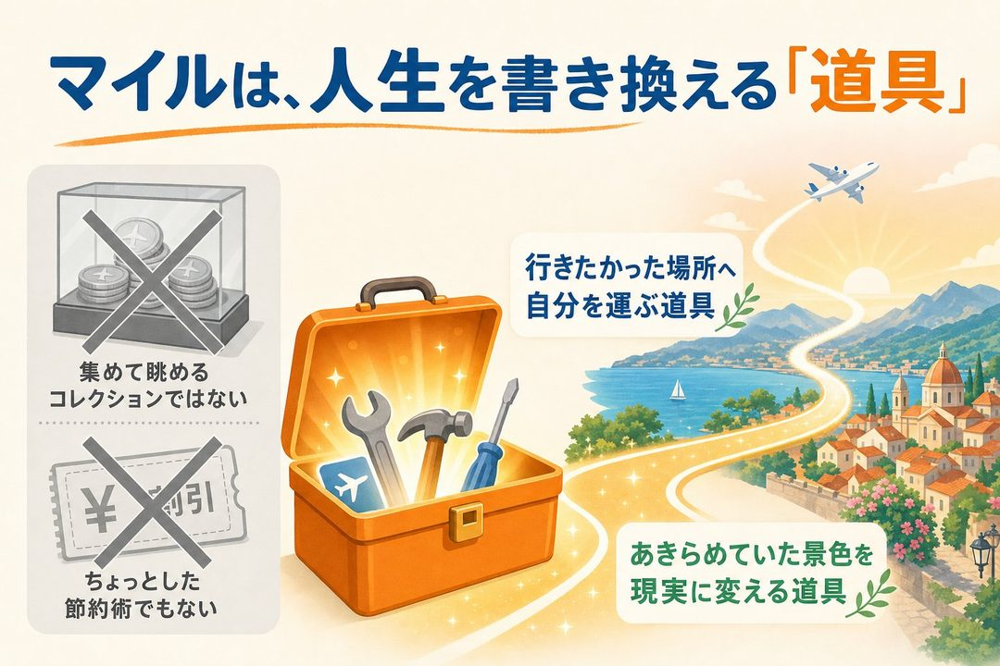
マイルは、人生を書き換える「道具」
「じゃあ」
ケンジは、顔を上げた。
その目には、これまでなかった、まっすぐな光が、あった。
「その“道具”は、どうやって、選べばいいんですか?」
マキの目が、うれしそうに、光った。
「それが、いちばん大事なところ。
次に、話すね」
あなたなら、もし、その道具を手に入れたら――
どんなふうに、使ってみたいですか。
どんな景色を、見に行きたいですか。
その答えを、心のどこかに置いたまま、次の章へ、進んでください。
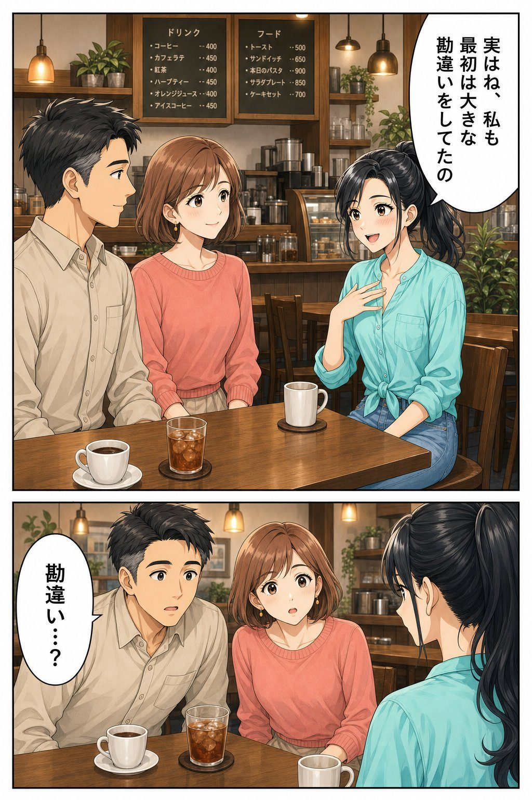
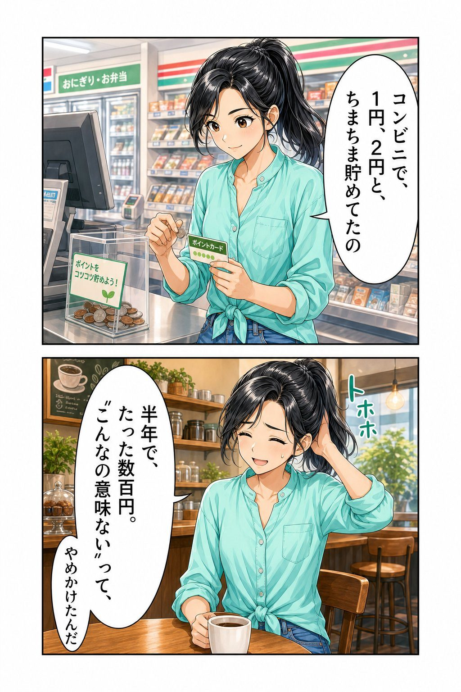
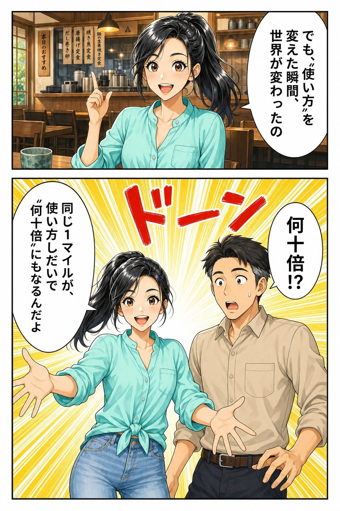
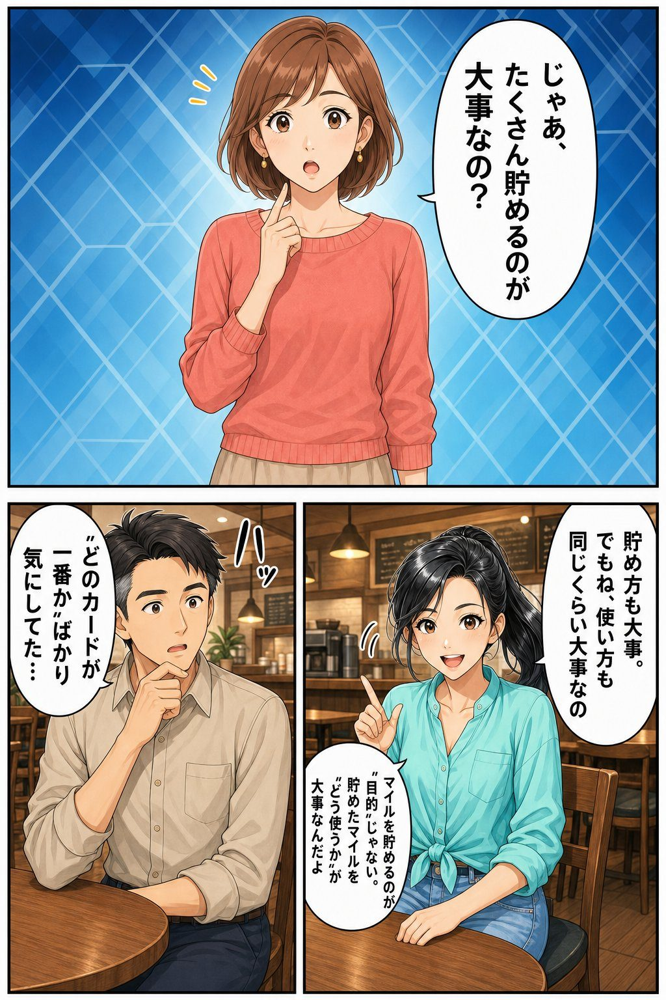
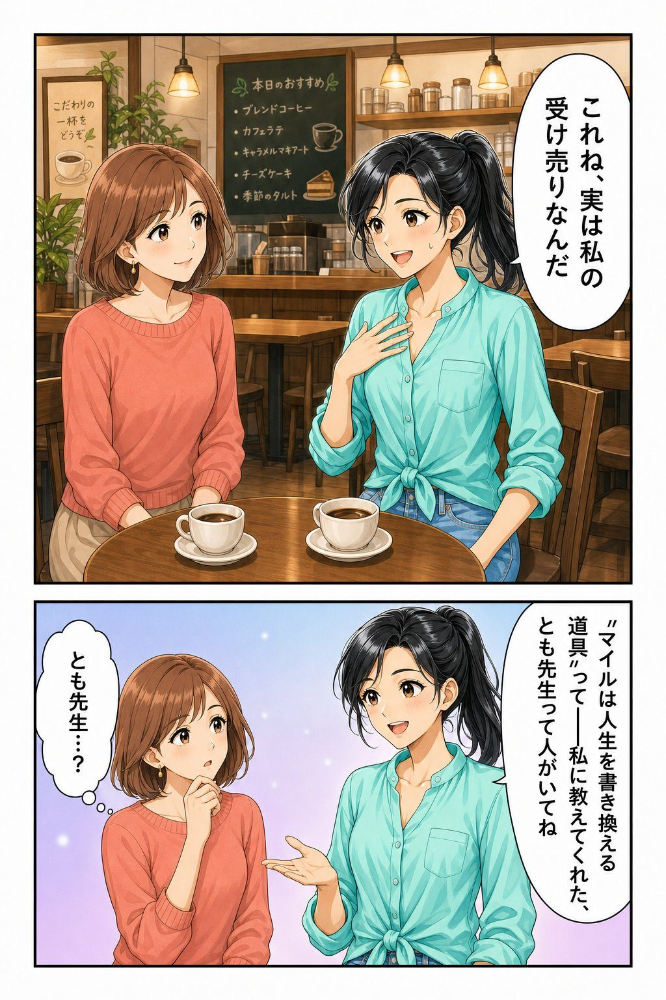
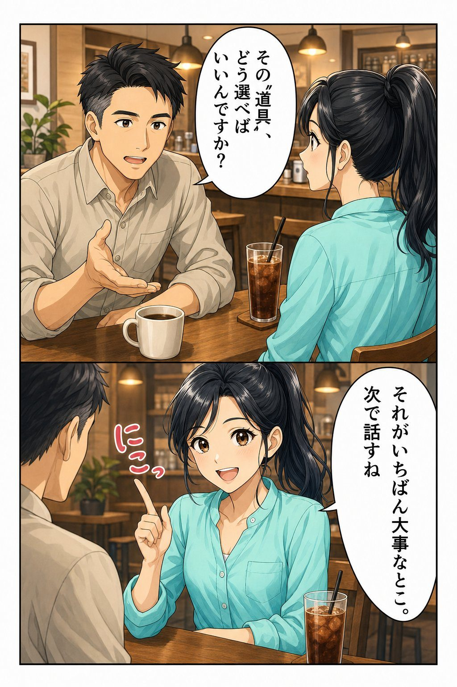
05第4章 どのカードを持つかは、どんな未来を描くかで変わる
「でも」
ケンジは、財布を、そっと開いた。
中には、何枚かのカードが、入っている。
どれも、年会費のかからない、無料のカードだ。
「年会費が高いカードって……
正直、損な気がして」
年に、何千円も、何万円も、払う。
それだけで、なんだか、もったいない気がする。
損を、したくない。
無料のほうが、絶対に、トク。
そう思うのが、当たり前だと、思っていた。
「私も、まったく同じことを、思ってたよ」
マキは、にっこりと、うなずいた。
「年会費なんて、払うだけ、損。
そう信じて、ずっと、無料のカードだけ、使ってたの」
「じゃあ、どうして……」
「それが、ある体験で、ぜんぶ、変わったの」
空港ラウンジの落ち着いた時間
マキは、あるカードに切り替えたときの話を、順に、話してくれた。
まず、空港のラウンジ。
「これまでは、出発までの時間を、混み合った待合室の、かたいベンチで、過ごしてたの」
まわりは、人でいっぱい。
落ち着いて、座る場所もない。
「早く、飛行機に乗りたいなあって、そればっかり、思ってた」
でも、そのカードを持ってから。
「空港のラウンジを、無料で、使えるようになったの」
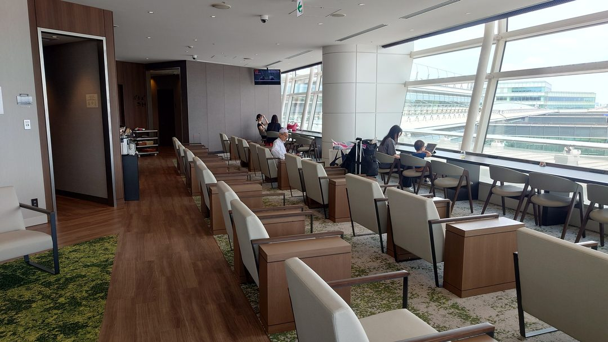
静かな、空間。
ゆったりとした、ソファ。
冷たい飲み物を片手に、窓の外に広がる、街の眺め。
「そこに座った瞬間ね、気づいたの。
“あ、旅って、乗る前から、もう始まってるんだ”って」
あわただしさが、消えて。
心が、すっと、ととのう。
その時間が、どれほど、贅沢だったか。
「もう、あのベンチには、戻れなくなっちゃった」
マキは、笑った。
憧れのホテルに、二人で「無料」で
「それから、宿泊」
マキの声が、少し、はずんだ。
「ずっと、憧れてた、あの高級ホテル、あるでしょう」
一泊、いくらするんだろう、と、値段を見ては、そっと、ページを閉じていた。
「一生、縁がないと思ってた、そのホテルに――
夫婦ふたりで、“無料”で、泊まれたの」
ユミが、息を、のんだ。
眺めの、いい部屋。
ふかふかの、ベッド。
窓の外には、きらめく、街の夜景。
「部屋に入った瞬間、夫と二人で、“わあっ”て、声が出ちゃった」
普段なら、絶対に手が出ない、その一室に、一円も払わずに、泊まる。
「もう、夢みたいだった。
何度も、部屋の写真、撮っちゃったよ」
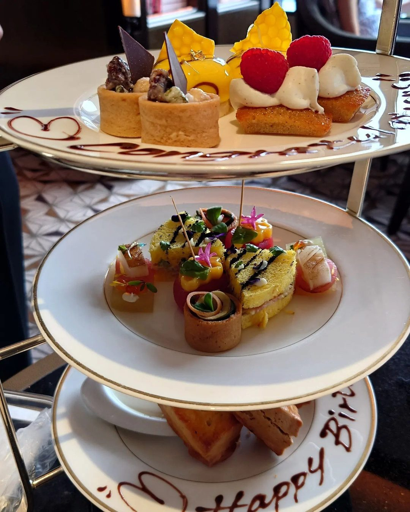
翌朝には、優雅な、アフタヌーンティー。
三段のお皿に並んだ、色とりどりの、スイーツ。
「こんな時間が、自分の人生にもあるなんて、思ってもみなかった」
ユミは、その話に、うっとりと、聞き入っていた。
自分も、あんな景色の中に、立ってみたい。
心の奥で、これまでずっと、ふたをしていた願いが、
ゆっくりと、顔を、出しはじめていた。
レストランの、特別な夜
「それに、食事もね」
マキは、続けた。
旅先の、素敵なレストランで、コース料理を、味わう。
「それがね、優待で、“1人分が、無料”に、なったりするの」
二人で行っても、一人分の料金で、二人分の料理を、楽しめる。
「記念日にね、夫と、そういうお店に行ったの」
キャンドルの、やわらかな灯り。
運ばれてくる、美しい一皿、一皿。
「“いつも、ありがとう”って、照れくさくて、普段言えないことも、その夜は、言えた気がする」
がんばった、自分たちへの、ごほうびに。
大切な人と過ごす、特別な、一夜に。
「そういうのが、ぜんぶ、年会費の“おかげ”だったの」
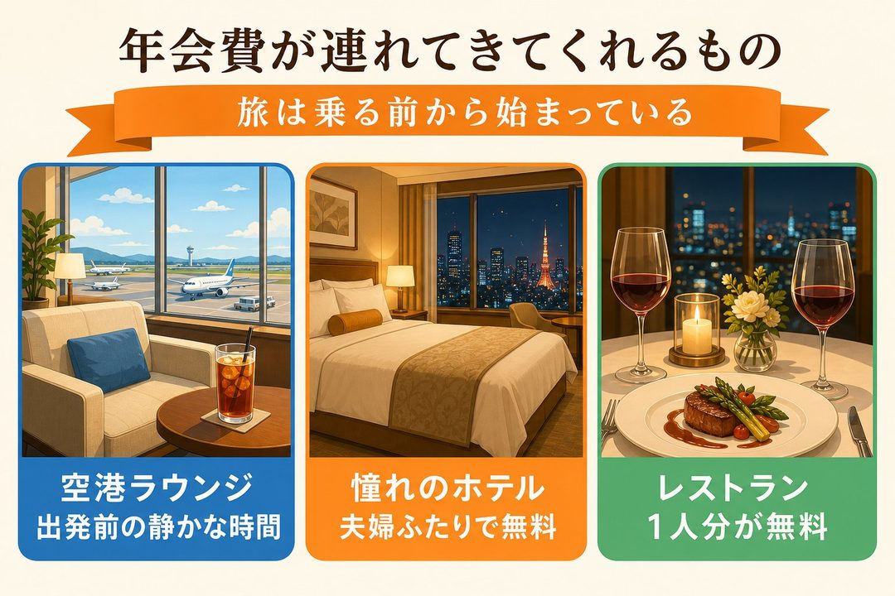
年会費が連れてきてくれるもの
「年会費」は、「未来への投資額」
「気づいたの」
マキは、静かに、言った。
「私、年会費を、“払う”ものだと、思ってた。
できるだけ、避けたい、出費だって」
でも、と、マキは続けた。
「今は、まったく、違う感覚なの。
年会費は――
“未来へ投資してる”お金なんだ、って」
たとえば、年に、何千円かの、年会費。
その数字だけを見れば、たしかに、出費だ。
でも、その先に返ってくるものを、思い出してみてください。
ラウンジでの、くつろぎの時間。
憧れのホテルでの、一泊。
記念日の、特別な食事。
そして、そこで生まれる、一生ものの、思い出。
それらを、ぜんぶ手にできるなら。
その年会費は、「消えていくお金」でしょうか。
それとも、「未来を、豊かにするお金」でしょうか。
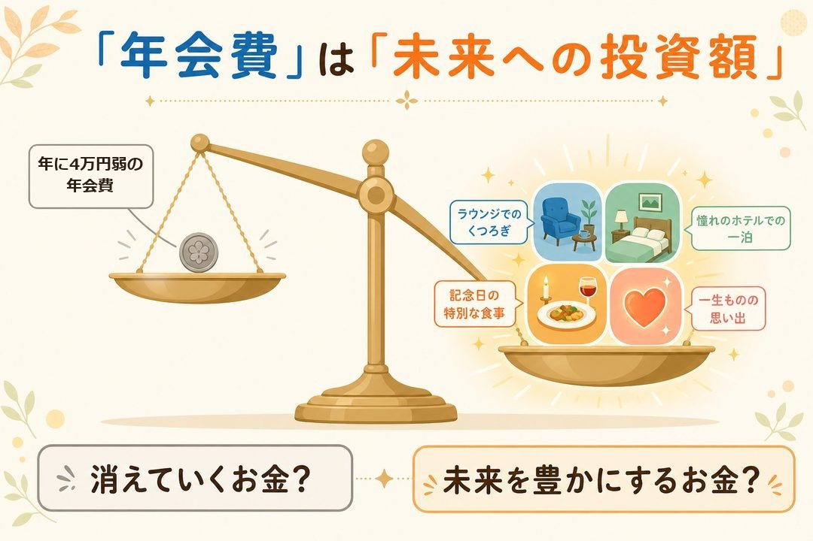
「年会費」は「未来への投資額」
「損か、トクか、で選んでたころは、いつまでも、無料の世界から、出られなかった」
マキは、言った。
「でも、“どんな未来がほしいか”で、選ぶようになってから、世界が、ぐんと、広がったの」
ケンジの中で、かたく凝り固まっていた常識が、音を立てて、ほどけていくのを、感じた。
「投資……」
無意識に、その言葉を、繰り返していた。
自分は、いつも、「損か、トクか」で、決めてきた。
でも、そのものさしでは、測れない世界が、すぐそこに、あったのだ。
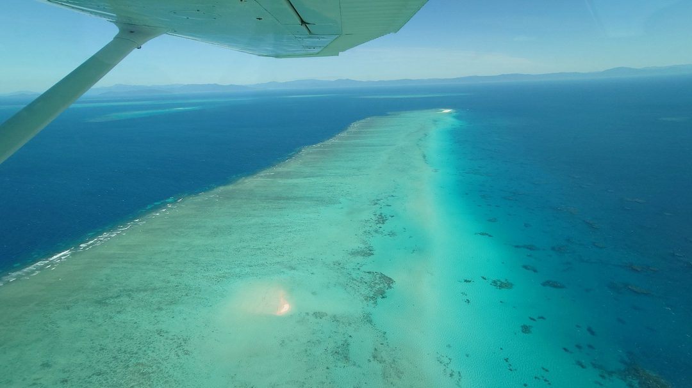
はるかな時が育てた、この海を、大切な人と、空から見る。
その一瞬の価値を、「損か、トクか」で、測ることが、できるでしょうか。
どんな未来を、描くか
「これもね」
マキは、また少し、照れて、言った。
「とも先生が、いつも言ってる言葉なんだ」
そして、一言ずつ、大切に、置くように、こう言った。
「“どのクレジットカードを持つかは、どんな未来を描くかで変わる”」
ケンジと、ユミは、その言葉を、心の中で、静かに、繰り返した。
どんな未来を、描くか。
問われているのは、「どのカードが、一番トクか」では、なかった。
「自分は、どんな未来を、生きたいのか」だった。
家族で、憧れの場所へ、行きたいのか。
夫婦で、特別な時間を、過ごしたいのか。
子どもに、本物の景色を、見せてやりたいのか。
その未来が、はっきりすれば。
選ぶべき道具は、おのずと、決まってくる。
カードを選ぶことは、未来を選ぶことだった。
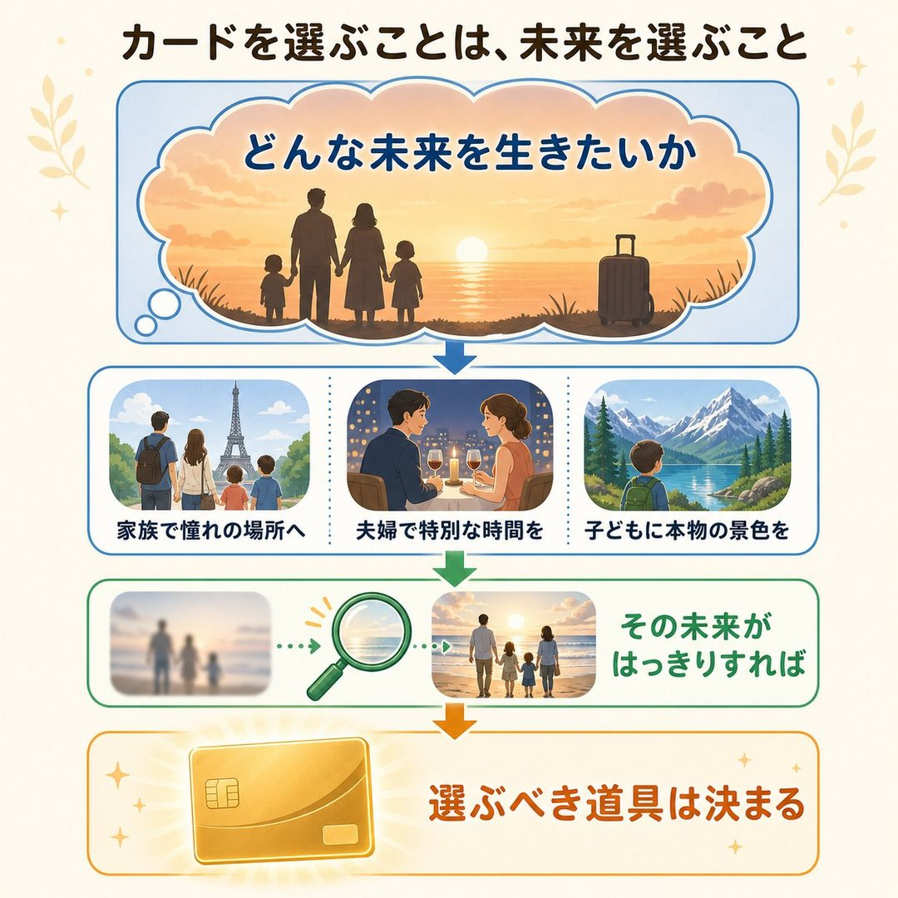
カードを選ぶことは、未来を選ぶこと
「私たち……」
ユミが、そっと、ケンジの顔を、見た。
「どんな未来を、描きたいんだろうね」
その問いに、ケンジは、すぐには、答えられなかった。
でも、その胸の中には、これまで見ないように、していた、たくさんの「行きたい場所」が、
あふれ出そうに、なっていた。
子どもと歩く、異国の街。
妻と眺める、遠い国の、夕日。
そんな景色が、次々と、浮かんでは、消えた。
「その未来のために」
ケンジは、顔を上げた。
その声には、これまでにない、力が、こもっていた。
「僕は、今日から、何をすればいいですか?」
「その一歩、いっしょに、考えよう」
マキが、うれしそうに、笑った。
あなたは、どんな未来を、描きたいですか。
その答えの中にこそ、あなたにとっての「正解」が、かくれているのかもしれません。
> ※カードの特典・サービス内容・年会費等は、変更・改定される場合があります。
最新の情報は、各カード会社の公式案内などで、必ずご確認ください。
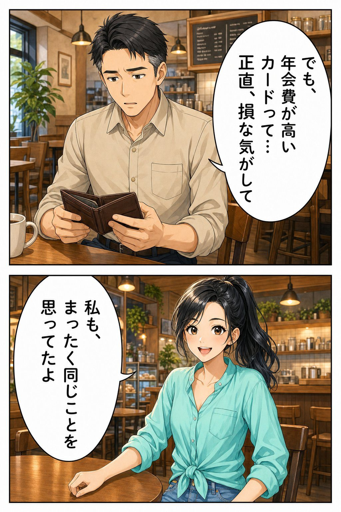
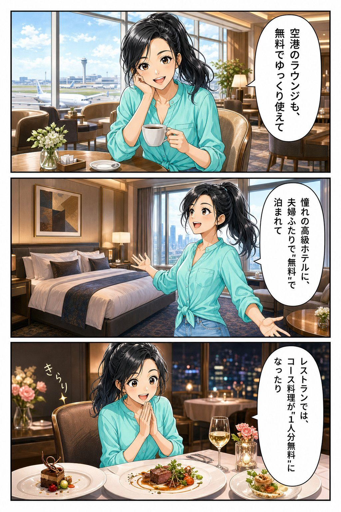
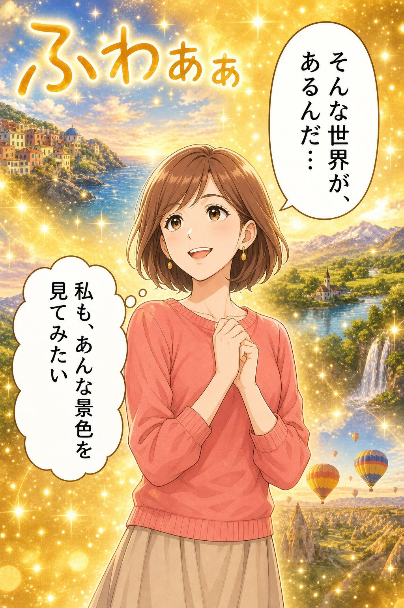
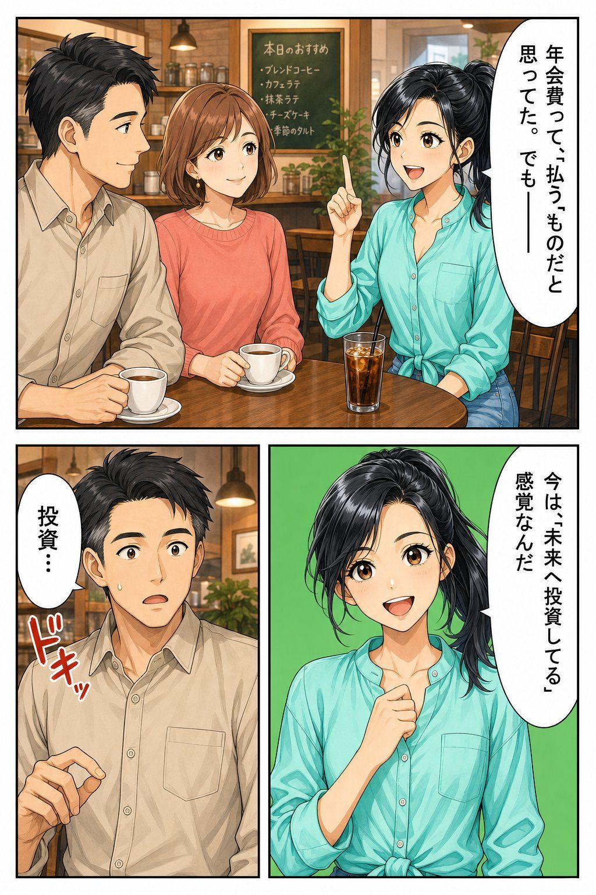
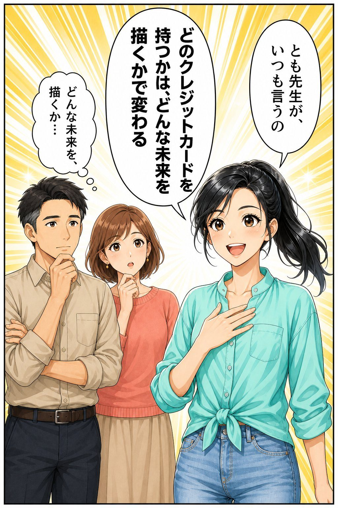
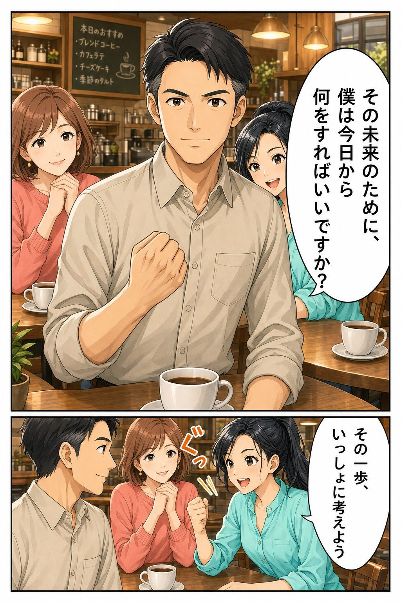
06第5章 あなたの人生を変える第一歩
「やってみたい」
ケンジは、正直に、言った。
でも、その顔には、まだ、少しの不安が、残っていた。
「でも……何から始めればいいのか、正直、見当も、つかなくて」
新しいことを始めるとき、私たちは、つい、こう思ってしまいます。
全部、覚えないと、いけないんじゃないか。
難しいことを、勉強しないと、いけないんじゃないか。
その「大変そう」という気持ちが、最初の一歩を、重くします。
あなたにも、覚えがありませんか。
やってみたいけれど、なんだか、難しそうで。
結局、何も始められないまま、時間だけが、過ぎていく。
でも。
「大丈夫」
マキは、あっさりと、笑った。
「全部いっぺんに、やらなくて、いいの」
その一言に、ケンジの肩から、すっと、力が抜けた。
入り口は、いくつもある
「マイルを貯める入り口はね、いくつか、あるの」
マキは、指を折りながら、教えてくれた。
ひとつめは、ポイントサイト。
ふたつめは、公共料金の支払い。
みっつめは、クレジットカード。
よっつめは、キャンペーン。
いつつめは、ネットショッピング。
「ざっと、こんな感じ」
ケンジは、それを聞いて、また、少し、身構えた。
こんなに、あるのか。
やっぱり、大変そうだ。
「あのね」
マキは、その顔を見て、笑った。
「今、ぜんぶ覚えなくて、大丈夫だよ」
「え?」
「大事なのは、“こういう入り口が、あるんだ”って、知っておくこと。
それだけで、いいの」
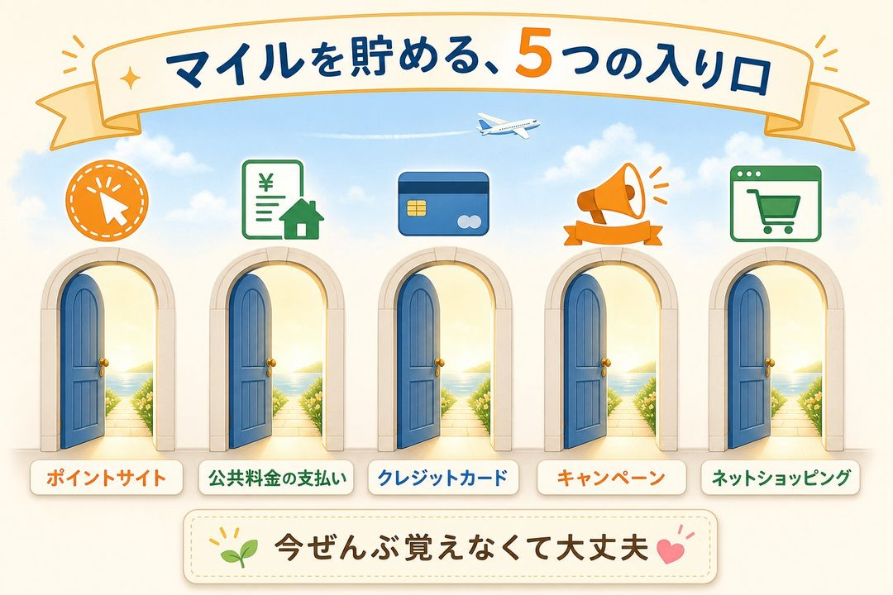
マイルを貯める、5つの入り口
まずは、「1つ」だけ
大切なのは、ここからです。
「入り口は、たくさん、ある。
でも、最初から全部やろうとすると、続かないの」
マキは、言った。
「だからね。まずは、“1つ”だけ」
たった、ひとつ。
自分にできそうな入り口を、ひとつだけ、選んで、そこから、始めてみる。
それだけで、いい。
「私も、最初は、ひとつだけだったよ」
無理をして、いきなり全部、やろうとすると、たいてい、途中で、いやになってしまう。
でも、ひとつだけなら、今日からでも、始められる。
そして、ひとつが、当たり前に、なったら。
次の、ひとつ。
そうやって、少しずつ、自分のペースで、増やしていけばいい。
「マイルはね、がんばって、一気に貯めるものじゃ、ないの」
マキは、言った。
「暮らしの中に、そっと、組み込んでいくもの、なんだよ」
いつもの支払いを、少し変えるだけ。
いつもの買い物を、少し工夫するだけ。
がんばらなくても、毎日の暮らしの中で、気づけば、マイルは貯まっていく。
その積み重ねの先に、あの、青い海が、待っている。
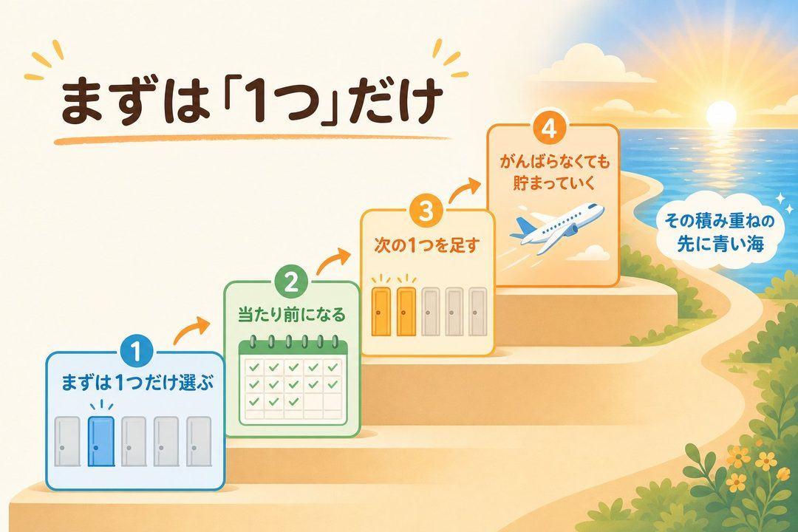
まずは「1つ」だけ
旅を、人生の「習慣」にする
ユミが、明るい声で、言った。
「ねえ、次の連休、どこ行こうか」
ケンジは、思わず、ふきだした。
「気が早いなあ」
でも、その顔は、笑っていた。
「……でも、いいね」
少し前まで、「旅行なんて贅沢だ」と言っていた二人が、今は、次の旅の話を、している。
その変化は、決して、大きな出来事では、ありませんでした。
宝くじが当たったわけでも、急に、給料が上がったわけでも、ない。
ただ、「旅は、遠い世界のもの」という思い込みを、手放しただけ。
そして、「まずは、ひとつだけ」と、一歩を、踏み出しただけ。
旅は、特別な日の、特別なイベントでは、ありません。
暮らしの中に、当たり前にある、人生の習慣に、できるのです。
年に一度が、二度になり。
国内が、海外になり。
気づけば、「次はどこへ行こう」が、家族の、合言葉になっていく。
食卓で、地図を広げて、「ここ行ってみたい」「じゃあ次はここ」と、笑い合う。
そんな人生を、あなたも、始められます。
大空へ、飛び出す。
知らない街を、歩く。
現地の人と、笑い合う。
そんな一日が、「特別なこと」ではなく、「時々ある、うれしいこと」に、変わっていく。
想像するだけで、少し、ワクワクしてきませんか。
旅を、人生の「習慣」にする
ひとりの案内人
「ねえ」
マキが、ふと、思いついたように、言った。
「もっと、ちゃんと知りたい?
よかったら――」
そして、笑顔で、こう続けた。
「私が教わった、“とも先生”に、会ってみない?」
第3章から、名前だけ、聞いていた、あの人。
マキに、あの言葉たちを、教えた、案内人。
「とも先生に……!」
ケンジとユミは、思わず、顔を、見合わせた。
数日後。
二人の前に、穏やかな笑みを浮かべた男性が、姿を、見せた。
やわらかな物腰の、ネイビースーツの人だった。
「はじめまして」
その人は、静かに、言った。
「マキさんの、“先生”をしています」
とも先生だった。
答えを、上から教える人では、なかった。
ただ、そこにいるだけで、「大丈夫。あなたにも、できる」と、背中を、そっと押してくれるような、人だった。
「旅を、人生の“習慣”に、しましょう」
とも先生は、そう言って、やわらかく、微笑んだ。
「はい」
ケンジとユミの声が、そろった。
その返事は、自分でも、驚くほど、まっすぐだった。
「こんな旅がしたい」を、ふくらませる
「まずは」
とも先生は、こう続けた。
「無料の動画を、見てみてください」
貯め方を、いきなり覚える必要は、ない。
難しい勉強を、始める必要も、ない。
「その動画はね」
とも先生は、言った。
「“やり方”を詰め込む場所じゃ、ないんです。
“こんな旅が、できるんだ”っていうイメージが、ぐんと、広がる場所なんですよ」
どんな景色が、待っているのか。
どんな時間を、過ごせるのか。
自分たちの人生に、どんな旅が、加わっていくのか。
まずは、それを、思いきり、ふくらませてほしい。
「行きたい」という気持ちこそが、最初の、いちばん大きな、燃料になるから。
「不思議なものでね」
とも先生は、続けた。
「“こんな旅がしたい”って、はっきり思い描けた人ほど、ちゃんと、そこにたどり着くんです」
「あなたの次の旅が、人生を変える、一歩になりますように」
とも先生の言葉に、ケンジは、心の中で、そっと、つぶやいた。
――あきらめなくて、よかった。
まだ、何も、始まっていません。
でも、二人の目は、もう、次の旅を、見つめていました。
その目の輝きは、出会ったころとは、まるで、別人のようでした。
さあ、二人の物語も、いよいよ、最後の一歩です。
一年後、この夫婦が、どこに立っているのか。
その景色を、どうか、見届けてください。
07おわりに
それから、私たちは、少しずつ、学んでいきました。
新しい貯め方を知るたびに、「え、こんな方法も、あるの!?」と、目を、丸くして。
夫婦で、夜、額を寄せ合って、「次は、どこに行こうか」と、話して。
カレンダーが、めくれるたびに、マイルは、少しずつ、着実に、貯まっていきました。
正直に、言えば。
自分たちだけでは、ここまで、たどり着けなかったと、思います。
何度も、「本当に、できるのかな」と、不安になった夜も、ありました。
でも、先を行く、友人がいて。
背中を、押してくれる、案内人がいた。
だから、あきらめずに、一歩ずつ、進んでこられました。
そして――
一年後。
私たちは、いま、青い海の前に、立っています。
かつて、テレビの画面ごしに、「いいなあ」と、ため息をついていた、あの海。
その、本物の海の前に。
「本物の海って……
やっぱり、全然、ちがうね」
ユミが、まぶしそうに、笑いました。
潮の香り。
足の裏の、あたたかい砂。
どこまでも続く、水平線。
テレビでは、決して、伝わらなかったもの。
それを今、家族みんなで、感じている。
波打ち際では、子どもが、はしゃいで、走っています。
「パパ、ママ、こっちこっち!」
その姿を、ユミが、写真に、おさめます。
この一枚も、何年たっても、色あせない、私たちの宝物に、なるのでしょう。
「まさか、本当に、家族で来られるなんてな」
ケンジが、しみじみと、言いました。
あのとき。
「うちには無理」と、あきらめていたら。
この景色は、一生、テレビの中の世界のまま、でした。
「あのとき、あきらめなくて……
よかったね」
ユミの言葉に、ケンジは、静かに、うなずきました。
そして、心の中で、あの言葉を、そっと、思い出しました。
――旅は、人生でいちばんの、投資。
見上げた空に、数えきれないほどの、星。
日本では、見たことのない数の星が、二人の頭上に、広がっていました。
その星空の下で、ケンジは、思いました。
変わったのは、収入でも、特別な才能でも、なかった。
ただ、「自分には無理」という思い込みを、手放して。
「まず、ひとつだけ」と、一歩を、踏み出した。
それだけで、人生は、こんなにも、豊かになったのだと。
変わったのは、収入ではなかった
次は、あなたの番です
この物語を、ここまで読んでくださって、ありがとうございました。
もし、読み終えた、いま。
「旅に出たい」
「人生を、もっと楽しみたい」
「家族との思い出を、増やしたい」
そんな気持ちが、少しでも、心に灯っていたら。
それこそが、あなたの人生を変える、最初の一歩です。
その気持ちに、どうか、ふたを、しないでください。
旅は、贅沢では、ありません。
人生への、そして健康への、投資です。
そして、その投資は、特別な誰かではなく、今の、あなたから、始められます。
もし、次の一歩を踏み出したくなったら
この本を読んで、「こんな旅が、してみたい」と思えたら。
次は、ぜひ、この本の最後に案内している無料の動画講座を、のぞいてみてください。
そこは、難しい「やり方」を、覚える場所では、ありません。
「こんな旅が、できるんだ」
「自分にも、こんな未来が、描けるんだ」
そんなイメージが、ぐんと、広がる、入り口です。
まずは、その動画で、あなたの「行きたい」を、思いきり、ふくらませてください。
見終わったころには、きっと、胸の中に、行ってみたい場所が、いくつも、浮かんでいるはずです。
そして、もし、「もっと、具体的に知りたい」と、思ったら。
無料の個別相談会も、ご用意しています。
そこでは、たとえば、こんなことが、見えてきます。
●あなたに、おすすめのカードは、どれか
●あなたの暮らしなら、年間どれくらい、貯まりそうか
●そして、一年で、どんな旅が、できそうか
あなただけの、「これからの旅の地図」が、少しずつ、形になっていきます。
次の一歩は、この2つ
最後に
あの夫婦は、特別な人では、ありませんでした。
あなたと同じように、毎日を、がんばって働き、「旅行なんて贅沢だ」と、あきらめていた、ごく普通の、夫婦です。
その二人が、変われたのなら。
あなたにも、きっと、できます。
「いつか」を、待つのは、もう、終わりにしましょう。
その「いつか」は、待っていても、来ません。
でも、あなたが、今日、ほんの小さな一歩を、踏み出せば。
「いつか」は、「もうすぐ」に、変わります。
あなたの次の旅が、人生を変える、一歩に、なりますように。
さあ、次は、あなたの番です。
無料動画講座のご案内
ハッピーマイル旅講座
「旅に行きたい。でも、お金がかかるから後回しにしてしまう」
そんな方へ。
旅を人生の優先順位に入れるなら、次に考えたいのは「どうすれば無理なく旅費を下げ、もっと自由に旅を楽しめるか」です。
無料動画講座では、クレジットカード・マイル・ポイントを活用して、旅行費用を賢く抑えながら旅の選択肢を広げる方法をお伝えしています。
「マイルは難しそう」「自分には関係ない」と感じていた方でも、基礎からわかる内容です。
ご登録は無料です。 下のQRコード、またはURLからご覧ください。
https://fp-miler.com/lps/prj1/opt1/
あなたの次の旅が、もっと身近で楽しいものになりますように。
親子３人で行ったマイル旅

宮古島の絶景スポット

モルディブのリゾート島

ベルサイユ宮殿にて
ケアンズでのスカイダイビング

アメリカ･セドナで

親子３人ハワイでゴルフ
◀ 他の書籍を見る© 竹谷知悦 / 特別プレゼント版